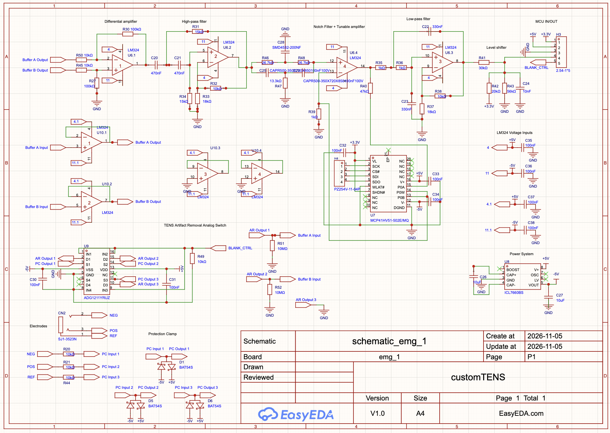
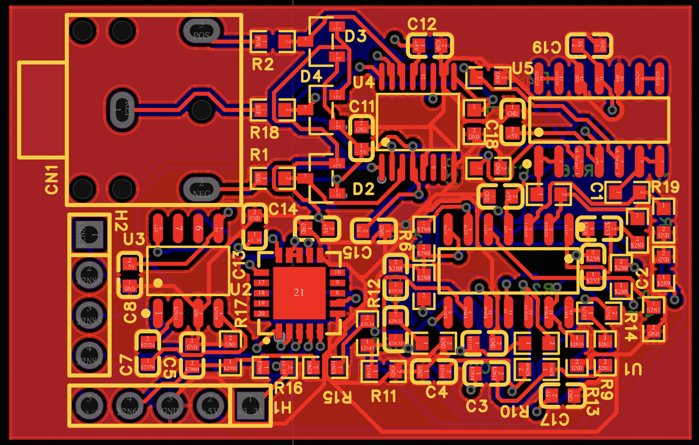

Single-Channel EMG Acquisition Module
A compact, standalone board that picks up muscle signals from surface electrodes and cleans them up through a multi-stage analog front end, ready to be digitized by an ESP32.

The Problem
When a muscle contracts, it produces an electrical signal you can measure on the skin, but that signal is only a few millivolts at most and sits under noise from power lines, movement, and nearby electronics. Lab EMG systems handle this well, but they're expensive and tied to a desk. I wanted to find out what it takes to build a small board that captures a clean muscle signal, and to use it as a hands-on way to learn analog front-end design.
The Solution
Most biosignal front ends follow the same idea: protect the input, amplify the difference between two electrodes, filter out everything that isn't the signal, and hand a clean voltage to the ADC. I designed the board around those stages.
- Input protection: series resistors and clamp diodes protect the front end from static and voltage spikes, and an analog switch can disconnect the inputs during electrical stimulation so artifacts don't saturate the amplifier.
- Analog front end: a differential amplifier boosts the muscle signal and rejects noise common to both electrodes. Filtering then limits it to the EMG band and removes 60 Hz power-line noise.
- Adjustable gain and level shifting: a digitally programmable gain stage adjusts amplification for different muscles, and a level shifter moves the signal into the ESP32's ADC range.
- Next stage: ESP32 firmware to sample the conditioned signal and stream it to a laptop for live plotting.

On the PCB, I kept the analog section away from the digital and power circuitry and used solid ground pours to keep noise down. The biggest lesson was how much layout matters. Trace routing, ground return paths, and where the decoupling caps go can decide whether you see a clean muscle signal or a screen full of 60 Hz noise.

Status and Takeaways
The board is designed and assembled. Next up is bench testing the analog front end, followed by the ESP32 firmware to capture and stream the signal. I'll update this page with live recordings at rest and during contraction once that's done.
Working through each stage, especially input protection, stimulation blanking, and keeping analog and digital separate, taught me how much each design choice affects the final signal.
What I'd Do Next
I'd add more channels, improve shielding and grounding to lower the noise floor, and use the signal to drive something physical, like a gripper that mirrors the motion of your hand.